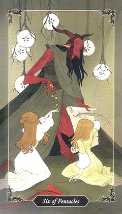

6 пентаклів
Пряме значення
акт милосердия, спонсорство. Взаимная выгода. Вы получаете то, что вам нужно, но какой ценой? Прочитайте то, что написано мелким шрифтом, пока не подписали договор и не лишились слишком многого. Неожиданное проявление доброты.
Перевернуте значення
благотворительность - трата времени, сил и денег - оказывается бессмысленной. Она может привести к возникновению иллюзий у того, кто получил помощь, вселить в него уверенность, что так будет всегда. Может быть, вы совершаете акты милосердия, чтобы раздуть свое эго и ощутить, что вы лучше других? Изучите свою истинную мотивацию.
Відносини / кохання
Здоров'я
Кар'єра / Бізнес
Карта дня
Порада
Так / Ні
